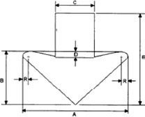
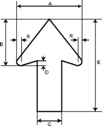
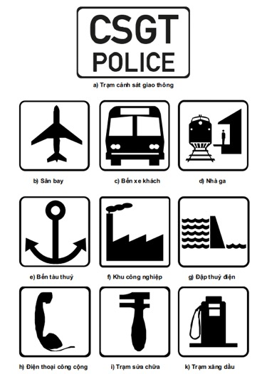
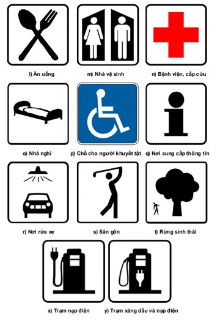

Nội dung biển chỉ dẫn đường cao tốc được tổ hợp từ một hoặc nhiều thông tin sau: địa danh, ký hiệu đường bộ, mũi tên chỉ hướng, mũi tên chỉ làn xe, chữ viết, chữ số, hình vẽ và các ký hiệu khác
Trình bày nội dung biển chỉ dẫn trên đường cao tốc được thực hiện theo quy tắc sau đây:
| Loại biển chỉ dẫn | Loại B | Loại A | ||
|---|---|---|---|---|
| Tốc độ thiết kế, km/h | 60; 80 | 100; 120 | ||
| Chiều cao chữ tiếng Việt, cm | 30,0 | 36,0 | 33,0 | 40,0 |
| Chiều cao chữ tiếng Anh, cm | 20,0 | 24,0 | 25,0 | 30,0 |
Nguyên tắc bố trí chữ viết trên biển chỉ dẫn trên đường cao tốc quy định như sau:
Kích thước chữ viết, chữ số và khoảng cách giữa các chữ được quy định chi tiết trong Phụ lục K của Quy chuẩn này.
Màu nền, màu chữ và đường viền của biển chỉ dẫn trên đường cao tốc được quy định như sau:
Chi tiết cụ thể về màu nền, màu chữ và đường viền được quy định cụ thể cho từng biển chỉ dẫn tại Phụ lục P của Quy chuẩn này. Kiểu chữ viết, màu chữ viết và màu nền của biển chỉ dẫn trên đường cao tốc được quy định trong Bảng 5.
| TT | Mô tả biển chỉ dẫn | Kiểu chữ | Màu chữ, số | Màu nền | Màu viền |
|---|---|---|---|---|---|
| 1 | Ký hiệu đường cao tốc | gt2 | đen | vàng huỳnh quang | đen |
| 2 | Ký hiệu quốc lộ, đường tỉnh, đường huyện | gt2 | đen | trắng | đen |
| 3 | Biển số IE.450 (a,b) chỉ dẫn sơ đồ, khoảng cách đến nút giao với đường dẫn vào đường cao tốc | gt2 | trắng | xanh lam | trắng |
| 4 | Biển số IE.451 (a,b) chỉ dẫn lối vào, khoảng cách đến lối vào đường cao tốc | gt2 | trắng | xanh lam | trắng |
| 5 | Biển số IE.452 chỉ dẫn bắt đầu đường cao tốc | gt2 | trắng | xanh lá cây | trắng |
| 6 | Biển số IE.453 (a,b) chỉ dẫn điểm kết thúc, khoảng cách đến điểm kết thúc đường cao tốc | gt2 | trắng | xanh lá cây | trắng |
| 7 | Biển số IE.454 chỉ dẫn khoảng cách đến lối ra phía trước | gt2 | trắng | xanh lá cây | trắng |
| 8 | Biển số IE.455 (a,b) chỉ dẫn khoảng cách đến các lối ra tiếp theo | gt2 | trắng | xanh lá cây | trắng |
| 9 | Biển số IE.456 (a,b,c) chỉ dẫn khoảng cách, hướng rẽ đến trạm dừng nghỉ | gt2 | trắng | xanh lá cây | trắng |
| 10 | Biển số IE.457 (a,b) chỉ dẫn nơi đỗ xe trong trạm dừng nghỉ | gt2 | trắng | xanh lá cây | trắng |
| 11 | Biển số IE.458 chỉ dẫn khoảng cách đến các trạm dừng nghỉ tiếp theo | gt2 | trắng | xanh lá cây | trắng |
| 12 | Biển số IE.459 (a,b) chỉ dẫn khoảng cách đến khu tham quan, du lịch | gt2 | trắng | xanh lá cây | trắng |
| 13 | Biển số IE.460 chỉ dẫn cột lý trình kilômét | gt2 | trắng | xanh lá cây | trắng |
| 14 | Biển số IE.461 (a,b,c) chỉ dẫn khoảng cách đến khu dịch vụ công cộng, giải trí | gt2 | trắng | xanh lá cây | trắng |
| 15 | Biển số IE.461d chỉ dẫn hướng rẽ vào khu giải trí | gt2 | trắng | nâu | trắng |
| 16 | Biển số IE.462 chỉ dẫn tần số trên sóng radio | gt2 | trắng | xanh lá cây | trắng |
| 17 | Biển số IE.463 (a,b,c) chỉ dẫn khoảng cách, hướng rẽ vào Công trình kiểm soát tải trọng xe | gt2 | trắng | xanh lá cây | trắng |
| 18 | Biển số IE.464 (a,b) chỉ dẫn địa điểm và phương hướng | gt2 | trắng | xanh lá cây | trắng |
| 19 | Biển số IE.465 (a,b) chỉ dẫn địa điểm và khoảng cách | gt2 | trắng | xanh lá cây | trắng |
| 20 | Biển số IE.466 chỉ dẫn sơ đồ lối ra một chiều | gt2 | trắng | xanh lá cây | trắng |
| 21 | Biển số IE.467 (a,b) chỉ dẫn vị trí nhập làn, khoảng cách đến vị trí nhập làn | gt2 | trắng | xanh lá cây | trắng |
| 22 | Biển số IE.468 (a,b,c) chỉ dẫn chướng ngại vật phía trước | - | - | vàng huỳnh quang | đen |
| 23 | Biển số IE.469 chỉ dẫn hướng rẽ | - | - | vàng huỳnh quang | đen |
| 24 | Biển số IE.470 chỉ dẫn số điện thoại khẩn cấp | gt2 | trắng | xanh lá cây | trắng |
| 25 | Biển số IE.471 chỉ dẫn giữ khoảng cách lái xe an toàn | gt2 | đen | vàng huỳnh quang | đen |
| 26 | Biển số IE.472 (a,b,c,d,e) chỉ dẫn khoảng cách đến trạm thu phí, trạm thu phí, thu phí không dừng, rút thẻ, thu phí | gt2 | trắng | xanh lá cây | trắng |
| 27 | Biển số IE.473 chỉ dẫn giảm tốc độ | gt2 | đen | vàng huỳnh quang | đen |
| 28 | Biển số IE.474 chỉ dẫn lối ra | gt2 | trắng | xanh lá cây | trắng |
| 29 |
Các biển chỉ dẫn khác: biển chỉ dẫn địa danh; địa phận hành chính cấp
tỉnh, thành phố; biển tên cầu, tên công trình lớn. (Thiết kế chi tiết các biển chỉ dẫn khác có thể vận dụng các quy định về biển chỉ dẫn cho đường ô tô không phải là đường cao tốc ngoại trừ các quy định nêu trong Bảng này) |
gt2 | trắng | xanh lá cây | trắng |
Chiều rộng đường viền xung quanh biển chỉ dẫn được quy định như sau:
Bán kính cong của đường viền xung quanh biển chỉ dẫn được lấy bằng 2% cạnh dài nhất của biển chỉ dẫn.
Đối với các biển chỉ dẫn chỉ lối ra, mũi tên xiên hướng lên phía trên được dùng để chỉ lối ra; hướng mũi tên phù hợp với hướng của lối ra.
Đối với mũi tên chỉ làn, mũi tên thẳng, hướng xuống dưới (chỉ sử dụng ở biển lắp đặt trên giá long môn, cần vươn) để quy định làn xe đi tới một địa điểm hay một tuyến đường nào đó.
Kích thước của mũi tên được quy định chi tiết như sau:
a) Mũi tên chỉ làn:
Hình 2.1 - Kích thước mũi tên
Đơn vị: cm
| A | B | C | D | E | R |
|---|---|---|---|---|---|
| 80,0 | 40,0 | 16,25 | 7,5 | 55,0 | 2,5 |
b) Mũi tên chỉ hướng:
Hình 2.2 - Kích thước mũi tên
Đơn vị: cm
| A | B | C | D | E | R |
|---|---|---|---|---|---|
| 48,0 | 40,0 | 18,0 | 4,0 | 80,0 | 3,0 |
Mũi tên chỉ hướng phải có hướng trùng với hướng cần chỉ dẫn.
Mã hiệu đường bộ được đặt trong một khuôn hình chữ nhật có kích thước cố định, gồm hai phần: tên đường bộ viết tắt và số hiệu đường bộ. Tên đường bộ viết tắt (Đường cao tốc - CT, Quốc lộ - QL, Đường tỉnh - ĐT, Đường huyện - ĐH). Tên đường bộ viết tắt và số hiệu đường bộ được phân cách bằng một dấu chấm. Sử dụng kiểu chữ gt2 (kiểu chữ thường) để ghi ký hiệu đường bộ, trong đó tùy theo độ dài của ký hiệu đường bộ, cho phép điều chỉnh chiều rộng của ký tự và khoảng cách giữa các ký tự cho sao phù hợp với khuôn hình chữ nhật định sẵn. Căn cứ Quy hoạch mạng lưới đường bộ thời kỳ 2021 - 2030, tầm nhìn đến năm 2050 đã được phê duyệt, mã hiệu đường cao tốc theo quy hoạch được quy định tại Phụ lục N của Quy chuẩn này. Kích thước mã hiệu đường cao tốc được quy định cụ thể tại Phụ lục O của Quy chuẩn này.
Quy định màu nền, chữ viết và chữ số trong mã hiệu đường bộ như sau:
Hình 4 - Mã hiệu đường bộ
Các biểu tượng khu công nghiệp, dịch vụ công cộng và giải trí được sử dụng để trình bày nội dung của một số biển chỉ dẫn nhằm mục đích đưa thông tin ngắn gọn, dễ hiểu đến người tham gia giao thông.
 Hình 5 - Biểu tượng khu công nghiệp, dịch vụ công cộng và giải trí
Về nguyên tắc, các biểu tượng khu công nghiệp, dịch vụ công cộng và giải trí được thể hiện trên nền màu trắng, hình vẽ màu đen và đường viền màu đen (Hình 5). Màu sắc của một số biểu tượng phải tuân thủ theo quy định tại Công ước Viên (Viena) về báo hiệu đường bộ. Kích thước của các biểu tượng này xem chi tiết tại Phụ lục P (mục P.8) và Phụ lục P (mục P.13) của Quy chuẩn này.
| TT | Số hiệu | Tên biển chỉ dẫn |
|---|---|---|
| 1 | Biển số IE.450(a,b) | Sơ đồ, khoảng cách đến nút giao với đường dẫn vào đường cao tốc |
| 2 | Biển số IE.451 (a,b) | Lối vào và khoảng cách đến lối vào đường cao tốc |
| 3 | Biển số IE.452 | Bắt đầu đường cao tốc |
| 4 | Biển số IE.453(a,b) | Kết thúc đường cao tốc |
| 5 | Biển số IE.454 | Khoảng cách đến lối ra phía trước |
| 6 | Biển số IE.455(a,b) | Khoảng cách đến các lối ra tiếp theo |
| 7 | Biển số IE.456(a,b,c) | Trạm dừng nghỉ và khoảng cách đến trạm dừng nghỉ |
| 8 | Biển số IE.457(a,b) | Nơi đỗ xe trong trạm dừng nghỉ |
| 9 | Biển số IE.458 | Khoảng cách đến các trạm dừng nghỉ tiếp theo |
| 10 | Biển số IE.459(a,b) | Khoảng cách đến khu tham quan, du lịch |
| 11 | Biển số IE.460 | Cột lý trình kilômét |
| 12 | Biển số IE.461(a,b,c,d) | Khu dịch vụ công cộng, giải trí |
| 13 | Biển số IE.462 | Tần số trên sóng radio |
| 14 | Biển số IE.463(a,b,c) | Công trình kiểm soát tải trọng xe |
| 15 | Biển số IE.464(a,b) | Địa điểm và phương hướng |
| 16 | Biển số IE.465(a,b) | Địa điểm và khoảng cách |
| 17 | Biển số IE.466 | Sơ đồ lối ra một chiều |
| 18 | Biển số IE.467(a,b) | Nhập làn |
| 19 | Biển số IE.468(a,b) | Chướng ngại vật phía trước |
| 20 | Biển số IE.469 | Hướng rẽ |
| 21 | Biển số IE.470 | Số điện thoại khẩn cấp |
| 22 | Biển số IE.471 | Giữ khoảng cách lái xe an toàn |
| 23 | Biển số IE.472(a,b) | Trạm thu phí |
| 24 | Biển số IE.473 | Giảm tốc độ |
| 25 | Biển số IE.474 | Lối ra |
Biển chỉ dẫn trên đường cao tốc được lắp trên cột cần vươn, giá long môn, trên cột hoặc vật kiến trúc nhưng đảm bảo an toàn và mỹ quan.
Lắp đặt biển chỉ dẫn trên giá long môn, cột cần vươn:
Hình 6 - Giá kiểu khung lắp đặt biển chỉ dẫn cho đường cao tốc
Vị trí lắp đặt biển chỉ dẫn bên lề đường cao tốc tuân thủ theo quy định tại Điều 16 của Quy chuẩn này.